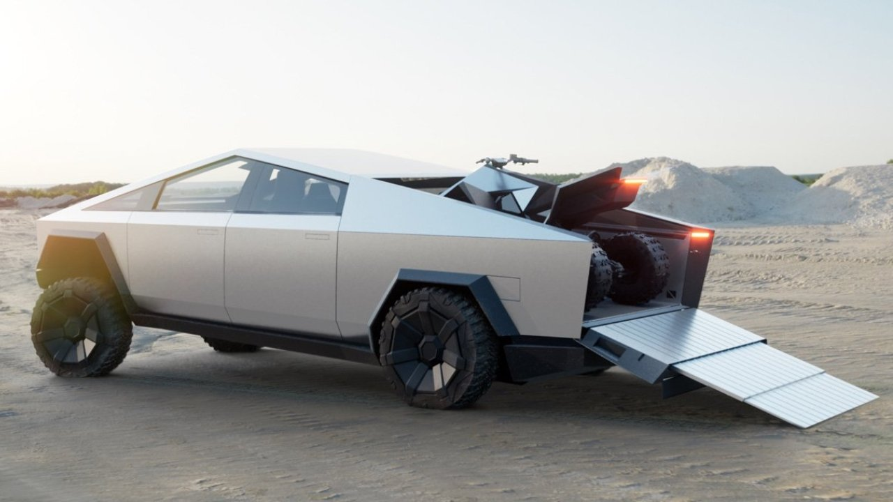
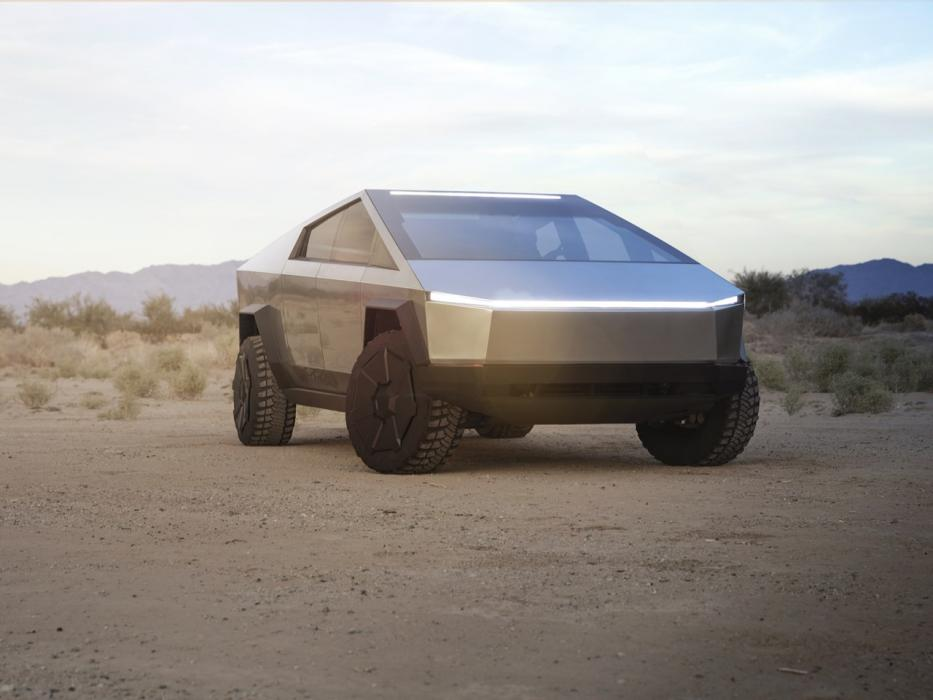

Cybertruck
El Tesla Cybertruck es la camioneta eléctrica de Tesla, un vehículo revelado recientemente que entrará en producción a finales de 2021 y del que ya se han reportado más de 250.000 reservas desde que fuera oficialmente presentado. Las medidas del Cybertruck son de 5.881 mm de longitud, 2.027 mm de anchura y 1.905 mm de altura, todo ello con formas extremadamente angulosas que nos dejan un frontal totalmente plano con un grupo óptico lineal que recorre todo el ancho del vehículo. Los pilares A están tremedamente inclinados y, en el punto más alto comienza un descenso hacia la zaga, donde se encuentra una cama de carga con 2.831 litros de capacidad volumétrica. Los pasos de rueda rectangulares o la vista posterior totalmente plana, dan paso a unos neumáticos todoterreno y a un techo con placas solares que ayudan a recargar su batería.
El interior del Cybertruck eléctrico no fue revelado en la presentación, pero se ha ofrecido una imagen que acompaña a estas líneas donde se aprecia su configuración de seis asientos (3+3). Su diseño seguirá siendo minimalista en el habitáculo, con una enorme pantalla táctil en el centro del salpicadero y un volante cuadrado muy futurista. El salpicadero parece una gran losa de mármol, aunque estará lejos de ser este material pesado. El cristal blindado de Tesla fue otra de las características que dio de que hablar durante y después de la presentación del Cybertruck. Elon Musk anunció que la carrocería y las ventanas de su nueva camioneta eléctrica estarían blindadas y que resistirían todo tipo de impactos. Sin embargo, durante la demostración, la ventana lateral del Cybertruck se rompió cuando recibió el impacto de una bola metálica..